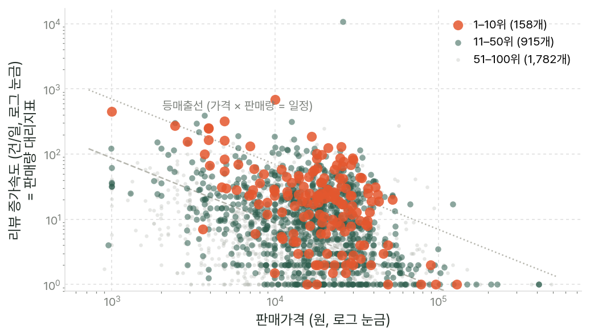
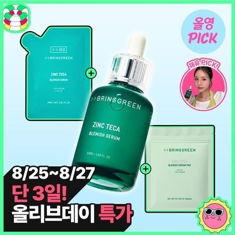
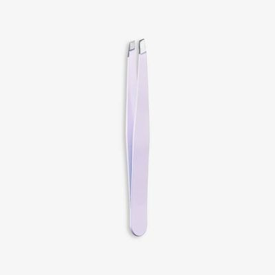
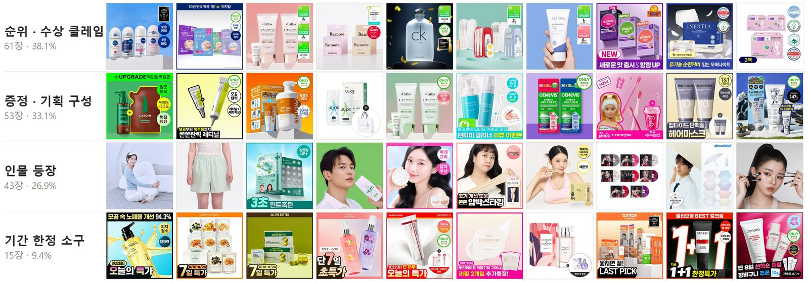

통념은 있지만, 검증은 없었다
리뷰 수와 랭킹의 정비례 관계는 오랫동안 전제되어 왔으나, 이를 상품 단위 실측 데이터로 직접 검증한 사례는 드물다.
1.1배경 및 문제 제기
올리브영은 국내 헬스앤뷰티(H&B) 시장의 지배적 유통 채널이다. 매장 진열과 모바일 앱 첫 화면에 노출되는 판매 랭킹은 소비자의 구매 결정을 유도하는 탐색 기점이자, 입점 브랜드가 자사 성과를 평가하는 핵심 지표로 활용된다. 그러나 해당 랭킹의 구체적인 집계 방식과 산정 기준은 대외적으로 공개되어 있지 않다.
업계에서는 누적 리뷰 수와 판매 랭킹이 정비례한다는 가설이 통용된다. 체험단 운영이나 리뷰 증정 이벤트를 통해 단기간에 리뷰 수를 확보하려는 마케팅 관행 역시 이러한 전제에 근거한다. 리뷰 수는 상품 상세 페이지에서 시각적 노출도가 가장 높고 소비자의 신뢰를 형성하는 지표이므로, 이러한 통념은 오랫동안 직관적인 타당성을 얻어 왔다.
그러나 해당 가설을 상품 단위의 실측 데이터로 직접 검증한 사례는 드물다. 특히 리뷰 축적이 순위 상승을 이끄는 선행 지표인지, 판매 호조에 따라 리뷰가 자연스럽게 누적되는 후행 지표인지에 대한 실증적 규명이 부재하다. 두 가설은 관측 데이터상 양의 상관관계로 동일하게 나타나지만, 실무 전략 관점에서의 함의는 상반된다. 전자의 경우 리뷰 확보 마케팅이 유효한 랭킹 견인 전략이 되지만, 후자의 경우 리뷰 프로모션에 투입된 예산은 순위 부양 효과 없이 단순 성과 측정에만 소모되었음을 뜻하기 때문이다.
이에 본 연구는 자체 구축한 일간 데이터 수집 파이프라인을 바탕으로 패널 데이터를 축적하고, 랭킹·리뷰·썸네일 간의 다각적 인과 구조를 가설 단위로 정밀 검증하고자 한다.
1.2분석 목적
본 분석의 목적은 올리브영 판매 랭킹의 실질적 결정요인을 상품 단위 시계열 패널 데이터로 규명하고, 랭킹과 리뷰 지표 간의 시차 선후 관계(선행 vs 후행)를 판별하는 데 있다. 이를 위해 4개 핵심 가설을 수립하고 실증 검증 체계를 설계했다.
리뷰 증가 속도는 랭킹 상승을 견인하는 핵심 선행 지표인가?
리뷰 증가 속도와 순위의 관계를 측정하고, 시차를 두어 양방향의 선후를 판별한다.
대가성(체험단) 리뷰 비중이 높은 상품이 랭킹에서 우위를 갖는가?
리뷰 본문의 대가성 공시 문구를 탐지해 상품·브랜드별 비중을 산출한 후 순위와 대조한다.
리뷰 총량과 평균 별점 중 랭킹을 더 잘 설명하는 지표는 무엇인가?
두 변수의 설명력을 분해해 증분 기여도를 비교한다.
썸네일의 시각적 구성이 상위 랭킹과 유의미한 상관관계를 가지는가?
썸네일의 밝기·채도·구성 복잡도 등을 수치화하고 판매 요인 통제 전후로 대조한다.
| 구분 | 연구 가설 | 검증 방법 |
|---|---|---|
| 가설 1 | 리뷰 증가 속도와 판매 랭킹 간 선행 관계 검증 | 리뷰 증가 속도와 순위의 관계를 측정하고, 시차를 두어 양방향의 선후를 판별 |
| 가설 2 | 대가성(체험단) 리뷰 비중과 랭킹의 상관관계 분석 | 리뷰 본문의 대가성 공시 문구를 탐지해 상품·브랜드별 비중을 산출 후 순위와 대조 |
| 가설 3 | 리뷰 총량과 평균 별점의 랭킹 설명력 비교 | 두 변수의 설명력을 분해해 증분 기여도를 비교 |
| 가설 4 | 썸네일 시각 구성 요소와 랭킹 간 연관성 검증 | 썸네일의 밝기·채도·구성 복잡도 등을 수치화하고 판매 요인 통제 전후로 대조 |
표 1. 분석 가설과 검증 방법
1.3데이터 수집 원칙 및 준수 사항
본 프로젝트는 상업적 목적이 없는 개인 데이터 분석 프로젝트로 학술 분석 목적으로 수행되었다. 수집된 원본 데이터는 제3자 판매나 재배포 대상이 아니며, 오직 통계 분석 목적으로만 활용한다. 개인식별정보는 일절 수집하지 않았고, 리뷰 작성자 식별자는 웹 페이지에 공개된 표시명에 한정된다.
올리브영의 웹 크롤링 정책(robots.txt)상 검색엔진 및 공인 AI 크롤러 13종에는 5초 간격의 요청 딜레이 준수를 조건으로 랭킹 페이지 접근을 허용하고 있으나, 비지정 도구에 대해서는 원칙적 제한을 명시하고 있다.
4개 영역, 21일간의 일간 패널
공개 API가 없는 환경에서 웹·모바일 클라이언트의 네트워크 엔드포인트를 역설계해 랭킹·리뷰 통계·리뷰 본문·대표 이미지를 매일 축적했다.
2.1데이터 수집 대상
올리브영은 공개 API를 지원하지 않는다. 이에 따라 웹 및 모바일 클라이언트가 사용하는 네트워크 엔드포인트를 역설계하여 4개 영역의 데이터를 수집했다.
| 데이터 | 내용 | 활용 목적 |
|---|---|---|
| 판매 랭킹 | 전체 및 카테고리별 TOP 100 메타데이터 (순위, 브랜드, 상품명, 정상가, 판매가, 할인율, 프로모션 배지, 썸네일 URL) | 종속변수(순위) 및 가격·프로모션 독립변수 구성 |
| 상품별 리뷰 통계 | 누적 리뷰 수, 평균 별점, 별점 점수대별(1~5점) 분포 | 리뷰 총량·품질 변수 생성 및 일간 차분을 통한 증가 속도 산출 |
| 리뷰 본문 | 상위 노출 리뷰 본문, 작성 일자, 부여 별점, 포토 첨부 여부 | 텍스트 마이닝 기반 대가성(체험단) 리뷰 탐지 및 비중 산출 |
| 상품 대표 이미지 | 랭킹 노출 썸네일 원본 이미지 | 컴퓨터 비전 기반 시각적 특성(밝기, 채도, 복잡도) 변수화 |
표 2. 데이터 수집 대상과 활용 목적
리뷰 본문 수집에는 구조적 제약이 존재한다. 올리브영 웹 인터페이스는 리뷰 목록을 최신순이 아닌 '도움순'으로 고정 노출한다. 즉, 확보된 본문 표본은 소비자가 상세 페이지 진입 시 가장 먼저 마주하는 상위 리뷰군일 뿐, 해당 상품의 전체 리뷰를 대변하지 않는다. 따라서 과거 리뷰의 내용까지는 확인할 수 없으며, 이러한 제약 때문에 리뷰 증가 속도는 본문 표본이 아니라 상품별 리뷰 수의 날짜 간 차분으로 산출했다.
2.2데이터 수집 범위
수집 기간은 2026년 7월 23일부터 8월 22일까지 총 21일간이며, 관측 도중 표본 편향을 최소화하기 위해 수집 범위를 대폭 확장했다. 초기에는 전체 판매 랭킹 100위만을 대상으로 하였으나, 100개 상품 표본으로는 상위권 내 순위 변동 요인을 규명하기에 대조군이 협소했다. 이에 8월 3일부터 20개 카테고리별 100위 목록을 파이프라인에 추가하였으며, 8월 5일부터 결측 없이 일간 2,000개 상품을 안정적으로 관측하여 카테고리 내 비교 기반을 확보했다.
| 구분 | 내용 |
|---|---|
| 수집 기간 | 2026-07-23 ~ 08-22 (21일). 전체 랭킹 21일, 카테고리 랭킹 17일 |
| 범위 변경 | 8/3부터 카테고리별 100위 추가. 8/5 이후 매일 안정 수집 |
| 수집 시각 | 매일 22:00 ~ 24:00 기준 일 1회 정기 실행 |
| 누적 규모 | 상품 5,694개 / 랭킹 36,100건 / 리뷰 본문 65,068건 / 썸네일 7,082장 |
| 결측 구간 | 7/24~26 및 8/2는 수집 실패. 8/10·8/11은 전체 랭킹만 수집 |
표 3. 데이터 수집 범위 요약
결측 구간에 따른 왜곡을 통제하기 위해 리뷰 증가 속도는 전일 대비 단순 증감분이 아닌 '직전 관측일 대비 경과일수 환산치'를 적용했다. 또한 일자 간 결합 패널 분석에는 카테고리 수집 체계가 완비된 8월 5일 이후의 데이터만을 엄격히 한정하여 활용했다.
2.3데이터 명세
수집된 원시 데이터는 통계 검정을 거쳐 종속변수 2종, 독립변수 5개 군, 통제변수 1종으로 정제되었다.
| 구분 | 변수 | 정의 및 산출 방식 | 활용 목적 |
|---|---|---|---|
| 종속변수 | 판매 순위 | 카테고리별 판매 랭킹 순위(1~100). 회귀분석 시 ln(자연로그) 변환 | 상위권 진입 여부를 나타내는 성과 지표 |
| 익일 잔류 여부 | 다음 수집일(t+1)에도 동일 카테고리 100위 내 잔류 시 1, 이탈 시 0 | 순위 유지력을 판별하는 보조 성과 지표 (5.6절) | |
| 독립변수 | 리뷰 증가 속도 | 상품별 리뷰 수의 날짜 간 차분 ÷ 경과일수. log(1+x) 변환 | 가설 1의 핵심 설명변수, 판매량 대리지표 |
| 리뷰 총량 | 상품별 누적 리뷰 수. log(1+x) 변환 | 누적 리뷰의 독립적 랭킹 기여도 검증 | |
| 평균 별점 | 상품별 평균 별점(1.0~5.0) 및 최하점(1.0) 비율 | 가설 3 검증 (품질 지표의 설명력 비교) | |
| 실제 판매가격 | 최종 혜택가. 로그 변환 적용 | 랭킹 집계 기준 검증 (매출액 vs 판매량) (5.3절) | |
| 할인율 | 정가 대비 할인율(%p) | 가격 프로모션 강도 측정 | |
| 프로모션 배지 | 쿠폰·증정·세일 배지 부착 여부(0/1) | 프로모션 유형별 효과 및 인과 구조 검증 (5.4절) | |
| 브랜드 | 상품의 브랜드명(범주형) | 브랜드 고정효과 분해 (5.5절) | |
| 썸네일 특성 | 대표 이미지의 밝기·채도·색 다양성·흰 배경 비율·구성 복잡도(경계선 밀도) | 가설 4 검증 (시각 문법과 순위 연관성) | |
| 대가성 리뷰 비중 | 리뷰 본문의 대가성 공시 문구 탐지 건수 ÷ 리뷰 수 | 가설 2 검증 (체험단 운영의 랭킹 영향도) | |
| 통제변수 | 카테고리 × 수집일자 | 카테고리와 날짜의 조합을 고정효과로 흡수 | 품목군별 모수 차이 및 요일 효과 통제 |
표 4. 분석 변수 명세
수집 · 분석 · 문서 생성을 하나의 파이썬 파이프라인으로
원천 데이터가 갱신되면 동일한 스크립트로 분석과 도표, 보고서가 함께 재현된다.
3.1개발 및 실행 환경
수집기와 분석 모듈, 보고서 생성기는 모두 파이썬으로 구현했으며 단일 로컬 환경에서 실행된다. 수집은 매일 밤 22~00시 사이에 실행 스크립트를 수기로 1회 호출하는 방식으로 운영했으며, 분석과 문서 생성은 수집된 원본 데이터로부터 언제든 재실행할 수 있도록 구성했다.
| 항목 | 내용 |
|---|---|
| 운영체제 | Windows 11 (로컬 단일 노드) |
| 언어 · 런타임 | Python 3.13 |
| 수집 실행 | PowerShell 스크립트(run_local.ps1)를 매일 밤 수기로 1회 호출 |
| 코드 구성 | scraper(수집) · analysis(분석·시각화) · report(문서 생성) 3개 패키지 |
| 데이터 저장 | 일자별 CSV(랭킹·리뷰·오류) 및 이미지 파일. 중간 진행 상태는 JSON 커서로 보관해 중단 시 이어받기 지원 |
표 5. 개발 및 실행 환경
3.2사용 라이브러리
| 라이브러리 | 버전 | 용도 |
|---|---|---|
| requests | 2.32 | HTTP 요청, 세션 및 재시도 제어 |
| beautifulsoup4 · lxml | 4.13 · 6.1 | 랭킹 페이지 HTML 파싱 |
| playwright | 1.40 | 봇 차단(403) 발생 시 브라우저 기반 쿠키 확보 |
| truststore | 0.9 | SSL 인터셉션 환경에서의 인증서 검증 통과 (선택) |
| pandas | 2.3 | 일자별 원본 병합, 패널 데이터 구성 및 전처리 |
| numpy | 2.3 | 고정효과 within 변환 및 회귀 행렬 연산 |
| scipy | 1.17 | 검정통계량 산출 및 분포 계산 |
| matplotlib | 3.10 | 보고서 수록 그림 생성 |
| Pillow | 12.2 | 썸네일 특성 추출 및 문서 내 이미지 삽입 |
표 6. 주요 라이브러리와 용도
3.3수집 파이프라인
단계별 수집 · 분석 흐름
데이터 저장 단계에서는 JSON 커서를 활용한 체크포인트 방식을 적용하여 수집 중단 시 즉각적인 이어받기를 보장하고 중복 수집을 원천 차단했다. 본 보고서에 포함된 모든 통계치와 도표는 원천 데이터 업데이트 시 재현 스크립트를 통해 자동으로 동기화된다.
같은 카테고리, 같은 날 안에서만 비교한다
관측 조건이 다른 이종 표본을 단순 대조하지 않도록 고정효과로 환경 차이를 흡수하고, 반복 관측에서 발생하는 표준오차 과소추정을 군집 보정으로 처리했다.
4.1비교 설계
순위 비교 분석에서 가장 경계해야 할 통계적 오류는 관측 조건이 상이한 이종 표본을 동일 선상에서 단순 대조하는 것이다. 예컨대 마스크팩 카테고리와 홈리빙 카테고리는 시장 규모와 소비자 탐색 주기가 근본적으로 다르며, 주중과 주말의 가격·프로모션 민감도 역시 상이하다.
이원 고정효과 모형 (Two-way Fixed Effects)
- 카테고리 고유의 품목 특성과 일별·요일별 환경 차이를 통제
- '카테고리 × 일자' 상호작용 고정효과를 모형에 적용
- 동일 품목군 및 동일 시점 내에서의 순수한 편차만을 비교 대상으로 격리
패널 오차항 군집 보정 (Cluster-Robust SE)
- 동일 상품의 21일 반복 관측에서 발생하는 오차항 자기상관 처리
- 독립 관측치로 가정할 경우 표준오차가 과소추정되어 유의성이 과대평가
- 개별 상품 단위를 하나의 군집으로 묶어 검정통계량을 엄격하게 보정
4.2해석 기준
신호 강도 (Signal Strength) 판정 기준
순위 변화율 및 모형 적합도 지표
모형의 전체 설명력은 카테고리 및 일자 고정효과를 걷어낸 순수 상품 간·내부 변동만을 포착하는 Within R²로 보고한다.
가설별 실증 검증
종속변수의 안정성 진단에서 출발해 리뷰·가격·프로모션·브랜드 순으로 검증하고, 리뷰와 판매의 선후 관계를 판별한 뒤 리뷰 본문과 썸네일까지 확장한다.
5.1랭킹의 일별 유동성
본격적인 분석에 앞서 종속변수로 설정한 판매 순위의 시계열적 안정성을 사전 진단하고자 했다. 일간 순위 변동이 무작위 행보(Random Walk)에 가깝다면 독립변수를 통한 통계적 설명력 확보가 불가능하기 때문이다. 이에 따라 판매 랭킹이 상위권 중심의 관성적 구조인지, 아니면 일간 교체율이 높은 유동적 구조인지를 판별하고, 순위 구간별로 잔류율과 이탈률에 구조적 편차가 존재하는지 실증적으로 추적한다.
전이 행렬(Transition Matrix) 구축. 전체 100위 목록을 날짜별로 비교해 전일에 없던 상품의 신규 진입 수를 산출했다. 또한 당일 순위 구간별로 다음 날 순위 구간의 분포를 집계해 마르코프 전이 행렬을 구성했다.
판매 랭킹은 관성이 커 일간 랭킹 교체 상품 수가 10개 내외일 것으로 예상했으나, 실제 유동성은 예상을 크게 상회했다. 하루 평균 35개, 즉 100개 상품 중 3분의 1이 매일 신규 진입하거나 교체되는 높은 유동성을 보였다.
익일 100위 내 잔류율. 같은 구간 유지 비율도 59.0%에 달해 최상위권은 사실상 고정 슬롯에 가깝다.
익일 이탈률. 절반이 하루 만에 TOP 100 밖으로 사라지는 회전문 구간이다.
새로 진입한 상품의 42%가 하위 회전 구간으로 들어온다. 진입과 잔류를 분리 검증해야 하는 이유다.
모든 순위 구간이 동일하게 변동하는 것은 아니었으며, 상위권과 하위권의 성격이 뚜렷하게 구분되고 있었다. 1–10위 최상위권은 익일 100위 내 잔류율이 92.0%, 동일 구간 잔류율이 59.0%에 달하는 안정 고착 구간인 반면, 76–100위 하위권은 익일 이탈률이 50.0%에 달하는 고회전 구간으로 나타났다. 따라서 이후 분석에서는 순위 상승을 이끄는 진입 요인과 순위를 지탱하는 잔류 요인을 분리하여 검증한다(5.6절).
5.2리뷰 총량과 리뷰 증가 속도의 영향력 비교
이커머스 업계에서 널리 통용되는 "리뷰 수가 많을수록 상위 랭킹에 오른다"는 가설의 실증적 타당성을 검증하고자 한다. 대규모 예산이 투입되는 체험단 및 리뷰 프로모션의 실효성을 평가하기 위해, 축적된 자산으로서의 누적 총량과 단기 활성도를 나타내는 일간 증가 속도 중 실제 순위를 견인하는 핵심 변수를 분리 식별할 필요가 있다.
분산 분해 및 회귀모형 증분 기여도 검정. 상품별 리뷰 수의 날짜 간 차분을 통해 일 단위 증가량을 산출하고 대수 변환을 적용했다. 이어 리뷰 총량 단독 모형, 리뷰 증가 속도 단독 모형, 두 변수를 결합한 다중회귀 모형을 순차 추정하여 변수별 증분 설명력을 비교했다.
두 변수 모두 순위와 관련이 있되 총량의 기여가 더 클 것으로 예상했다. 리뷰 수는 상품 페이지에 가장 크게 노출되는 수치이며 소비자가 신뢰의 근거로 삼는 값이기 때문이다. 그러나 검증 결과는 증가 속도의 단독 우위였다. 리뷰 증가 속도를 통제한 상태에서 리뷰 총량을 추가로 투입해도 모형의 설명력 증분은 통계적으로 유의하지 않았다.
누적 리뷰 수가 많을수록 상위 랭킹을 유지한다는 통념이 지배적이었으나, 실측 데이터 분석 결과 리뷰 누적 총량 자체는 순위를 견인하는 독립적인 힘을 갖지 못했다. 누적 리뷰가 많은 상품이 상위권에 위치해 보이는 현상은, 해당 상품이 현재 시점에서도 판매와 리뷰 유입이 활발한 스테디셀러이기 때문에 나타난 겉보기 상관관계에 불과하다.
실제로 최근 리뷰 증가 속도를 통제하자 누적 리뷰 총량의 추가적인 랭킹 설명력은 완전히 소멸했다. 이는 과거에 대량으로 쌓아둔 리뷰 자산이나 인위적인 리뷰 수 부풀리기가 상위 랭크를 보장하지 않으며, 오직 '현재 시점의 실질 판매 활성도'만이 순위를 결정함을 보여준다.
아울러 상품 평균 별점은 판매 순위에 대해 통계적 설명력을 전혀 갖지 못했다. 상위권과 하위권을 불문하고 대다수 상품의 별점이 5.0 만점 부근에 극단적으로 편중되는 천장 효과로 인해 상품 간 변별력이 없기 때문이다. 이는 리뷰 총량과 별점 모두 순위 설명력이 없으며, 오직 '최근 리뷰 증가 속도(판매량)'만이 유효한 핵심 지표임을 알 수 있다.
5.3랭킹 산정 기준 판별 — 판매량 vs 매출액
앞서 규명된 '리뷰 증가 속도의 영향도'는 새로운 의문을 제기한다. 이 결과가 리뷰 자체가 순위를 직접 견인한다는 인과적 증거인지, 아니면 두 변수가 '판매 성과'라는 공통의 잠재 요인을 동시에 반영하는 겉보기 상관관계인지 분리 식별해야 하기 때문이다. 올리브영이 랭킹 집계 로직을 비공개하고 있으므로 실측 데이터를 통해 플랫폼 랭킹의 실질 기준이 단순 판매 수량인지, 가격이 가중된 결제 매출액인지를 판별하고자 한다.
판매량(대리지표) × 가격 결합 회귀모형. 실구매자만 리뷰를 작성할 수 있는 플랫폼 특성을 활용해 리뷰 증가 속도를 '판매량'의 대리지표로 삼고, 판매 순위의 자연로그값을 종속변수로 두어 실제 혜택가(가격 로그)와 결합 회귀시켰다. 순위가 판매 수량 기준이라면 가격 계수는 통계적으로 0에 수렴해야 하며, 결제 매출액 기준이라면 두 변수의 표준화 회귀계수 비중이 대등하게 산출되어야 한다.
소비자 대중성을 지향하는 플랫폼 특성상 단순 판매 수량 기준일 것으로 예상했으나, 실측 결과 가격 변수는 판매량 대리지표와 사실상 대등한 통계적 가중치로 순위에 반영되고 있었다. 표준화 영향력 비율은 0.87로 도출되어 두 변수가 거의 동일한 비중으로 순위를 결정하고 있음이 확인되었다. 판매량과 가격을 곱한 단일 매출액 복합변수로 치환하더라도 모형의 설명력 감소는 거의 관측되지 않았으며, 20개 카테고리 중 18개에서 동일한 패턴이 반복 검증되었다.

올리브영 판매 랭킹은 단순 판매 수량이 아닌 결제 매출액에 수렴하는 방식으로 산정된다. 이 결과는 분석 전반의 해석 틀을 근본적으로 전환시킨다. 순위가 실질 매출액의 대리 관측치로 판명됨에 따라, 앞서 관측된 '리뷰 증가 속도의 높은 설명력'은 리뷰가 순위를 직접 상승시킨 것이 아니라 순위와 리뷰 증가가 모두 매출 호조를 사후적으로 반영하는 결과물임을 뜻한다.
다만 본 판별은 고가 상품 구매자와 저가 상품 구매자 간의 리뷰 작성 성향이 균일하다는 가정을 전제로 한다. 가격대별 리뷰 작성 성향에 체계적 편차가 존재할 경우 가격 계수 추정에 일부 편향이 개입될 수 있으나, 현재의 관측 데이터 구조상 이를 완전히 분리 통제하는 데는 한계가 따른다.
5.4프로모션 유형별 효과와 역인과 구조
할인율 조정, 쿠폰 지급, 증정품 제공, 세일 배지 부착 등 플랫폼 내 다양한 프로모션 수단이 실질적인 순위 상승을 견인하는지 검증하고자 한다. 프로모션은 시계열적으로 변동하므로 동일 상품 내 전후 비교를 통해 내생성을 통제하고 인과성에 근접한 효과를 식별할 수 있다.
개체 고정효과 및 이벤트 스터디(Event Study). 동일 상품 내에서 배지가 부착된 시점과 미부착 시점의 순위 편차를 직접 비교하는 개체 고정효과(Within-Product FE) 모형을 적용했다. 이 접근법은 상품 고유의 브랜드 자산이나 내재적 인기도 등 시불변 외생 요인을 모형 내부에서 상쇄하여 순수한 프로모션의 증분 효과를 격리한다. 아울러 배지 신규 부착 시점을 기점으로 전후 순위 궤적을 시계열로 추적하는 이벤트 스터디 분석을 병행했다.
모든 프로모션 유형이 판매 증대를 통해 순위를 끌어올릴 것으로 예상했으나, 실측 결과는 프로모션 수단에 따라 극명하게 엇갈렸다. 할인율 확대, 증정품 제공, 쿠폰 배지 부착은 모두 통계적으로 유의미한 순위 상승을 견인했으나, 세일 배지는 오히려 순위가 악화되는 역방향 결과가 관측되었다.
| 프로모션 유형 | 순위 변화율 | 신호 강도 |t| | 실무적 통계 해석 |
|---|---|---|---|
| 할인율 (1%p당) | 2.9% 개선 | 9.3 | 순위 상승 견인 (높은 안정성) |
| 증정 배지 | 9.9% 개선 | 4.8 | 단기 순위 부스팅 효과 확인 |
| 쿠폰 배지 | 10.9% 개선 | 4.0 | 부착 당일 순위 뚜렷하게 상승 |
| 세일 배지 | 28.7% 악화 | 3.6 | 역인과성 관측 (사후 투입 편향) |
표 7. 동일 상품 내부에서 측정한 프로모션별 순위 변화율
세일 배지의 순위 악화는 세일 자체가 판매를 저해한 것이 아니라, 이미 순위 하락세를 겪고 있던 부진 상품에 방어 목적으로 세일 혜택을 사후 투입한 결과로 나타난 전형적인 역인과성(Reverse Causality)이다. 반면 쿠폰 배지는 부착 당일 강력한 순위 상승을 견인하나 이후 빠르게 원래 수준으로 회귀하는 단기성 부스팅 특성을 보였다.
5.5브랜드 요인의 기여도
개별 품목의 일간 교체율이 높음에도 불구하고 특정 대형 브랜드들이 상위권을 장기 점유하는 현상이 관측된다. 이에 따라 개별 상품의 마케팅 믹스와 독립적으로 '브랜드 자산' 자체가 랭킹에 미치는 기여도를 측정하고, 브랜드 고정효과를 제거했을 때 5.2절에서 기각되었던 리뷰 총량의 설명력이 어떻게 변화하는지 규명한다.
브랜드 고정효과 분해 및 점유율 분석. 브랜드 요인을 고정효과로 흡수하여 동일 브랜드 내 품목 간 비교 모형으로 전환하고, 브랜드 통제 전후의 설명력 변화율과 회귀계수를 분해했다. 아울러 관측 기간 중 랭킹 노출 빈도가 높은 상시 랭커 브랜드를 식별해 전체 슬롯 점유율을 산출했다.
동일 브랜드 내부에서도 상품별 판매 편차가 존재하므로 개별 상품 특성의 영향력이 더 클 것으로 예상했으나, 실측 결과는 브랜드 자체의 설명력이 압도적인 것으로 나타났다. 브랜드 고정효과를 투입하자 모형의 순위 설명력은 22.0%에서 37.0%로 대폭 상승했다. 특히 전체 21일의 관측 기간 중 80% 이상 랭킹에 노출된 39개 핵심 브랜드가 전체 TOP 100 슬롯의 58.0%를 독점하고 있었다.
| 브랜드명 | 등장 일수 | 점유 슬롯 수 | 진입 품목 수 | 평균 순위 | 최고 순위 |
|---|---|---|---|---|---|
| 메디힐 | 21일 | 140개 | 11개 | 34.1위 | 1위 |
| 셀리맥스 | 21일 | 61개 | 5개 | 44.5위 | 2위 |
| 바닐라코 | 21일 | 55개 | 4개 | 55.3위 | 13위 |
| 아누아 | 20일 | 53개 | 10개 | 53.2위 | 1위 |
| 넘버즈인 | 17일 | 49개 | 13개 | 50.7위 | 3위 |
표 8. 상위 랭크 고착 브랜드 상위 5개사 현황 (전체 랭킹 기준)
메디힐 — 에센셜 마스크팩 10/10+1매 기획
"15년 연속 1위" 문구와 올리브영 어워즈 수상 배지를 전면에 배치하고 10+1 증정 구성을 함께 표기했다. 11개 품목을 교대로 투입해 슬롯을 점유한다.
아누아 — 피디알엔 히알루론산 수분 캡슐 미스트
연예인 모델 컷을 화면 절반에 배치하고 한정 기획 구성을 표시했다. 최고 1위까지 상승하나 평균 순위는 53.2위로 변동성이 크다.
그림 9. 상위권 고착 브랜드의 마케팅 소구 전략 비교 (실적 소구 vs 모델 소구)
브랜드 요인을 고정효과로 제거하자 5.2절에서 설명력이 사라졌던 리뷰 총량의 유의성이 다시 회복되는 양상이 관측되었다. 이종 브랜드 간 비교 시에는 리뷰 총량이 사실상 브랜드 인지도를 대리하는 표지로 기능했으나, 동일 브랜드 내부에서 비교할 경우 누적 리뷰가 많은 품목이 더 높은 순위에 위치했기 때문이다. 다만 그 영향력의 크기는 리뷰 증가 속도의 3분의 1 수준에 머물렀으며, 일자별 방향성도 일정하지 않았다.
5.6순위 상승 요인과 잔류 요인의 분리
5.1절에서 규명된 상위권 고착 및 하위권 고회전 구조를 바탕으로, 랭킹을 끌어올리는 진입 메커니즘과 확보한 자리를 지켜내는 유지 메커니즘이 분리되어 작동한다는 가설을 검증하고자 한다.
이항 잔류 모형(Retention Modeling). 일간 20계단 이상 변동하는 연속형 순위 대신, 익일 동일 카테고리 100위 내 잔류 여부(0/1)를 종속변수로 설정한 이항 패널 회귀모형을 추정했다. 이산형 종속변수는 일간 순위 변동의 노이즈에 영향을 받지 않아 유지 메커니즘을 안정적으로 식별한다.
순위를 끌어올리는 동력과 자리를 유지시키는 동력이 동일할 것으로 예상했으나, 실측 결과 두 메커니즘은 명확히 분리되었다. 특히 리뷰 총량과 할인율 변수에서 상반된 역할이 관측되었다.
| 독립변수 | 순위 상승 기여도 (Rank Lift) | 익일 잔류 기여도 (Retention) |
|---|---|---|
| 리뷰 증가 속도 | 강력한 기여 | 유의미한 기여 |
| 리뷰 누적 총량 | 조건부 기여 (브랜드 통제 시) | 뚜렷한 기여 · 안전장치 |
| 할인율 | 기여 (순위 부양) | 역방향 (잔류 확률 하락) |
| 쿠폰 · 증정 | 기여 | 기여 |
| 평균 별점 | 기여 없음 | 기여 없음 |
표 9. 순위 상승 견인 변수와 익일 잔류 기여 변수의 비교
누적 리뷰 총량의 실질적인 기능은 순위를 밀어 올리는 가속 장치가 아니라 진입한 자리를 지켜내는 안전장치로 판명되었다. 반대로 할인율은 단기 순위를 끌어올리는 반면 프로모션 종료 후 급격한 순위 이탈을 유발하여 잔류 확률을 낮추는 부작용을 보였다. 즉 가격 할인으로 끌어올린 순위는 지속성이 결여된다는 해석이 가능하나, 본 데이터 구조상 개별 프로모션의 정확한 종료 시점이 관측되지 않아 단정에는 한계가 따른다.
5.7리뷰와 판매의 선후 관계 검정
본 연구의 가장 핵심적인 인과성 쟁점으로, 횡단면 데이터에서 관측된 리뷰와 순위 간의 양의 상관관계가 '리뷰 축적이 판매를 유도한 선행 관계'인지, 아니면 '판매 호조로 인해 리뷰가 사후적으로 축적된 후행 관계'인지를 시계열 선후 관계로 엄밀히 판별하고자 한다.
교차지연 패널 회귀모형(Cross-Lagged Panel Model). 한 방향은 당일의 순위 변화량(순위 로그의 1차 차분)을 전일의 리뷰 증가 속도에 회귀하고, 다른 방향은 당일의 리뷰 증가 속도를 전일의 순위에 회귀하는 구조다. 두 모형 모두 전일의 누적 리뷰 총량, 할인율, 판매가격을 공변량으로 통제하고 카테고리-일자 상호작용 고정효과를 적용했으며, 검정은 상품 단위 클러스터 로버스트 표준오차 기준의 t 통계량으로 판정했다.
또한 실구매 후 배송 및 리뷰 작성까지 소요되는 물리적 시차를 고려하여 1일, 3일, 7일 시차별로 분석을 확장 반복했다.
양방향 인과성이 모두 관측되되 리뷰의 선행력이 더 클 것으로 예상했다. 그러나 실측 결과는 '순위 상위 진입 → 당일 리뷰 증가'의 일방향 경로만이 극도로 강력하게 검출되었다.
| 분석 시차 (k) | 전일 리뷰 증가 → 당일 순위 상승 | 전일 랭킹 상위 → 당일 리뷰 증가 |
|---|---|---|
| 1일 시차 | 미검출 (|t| = 0.4, p ≥ 0.05) | 강력 검출 (|t| = 23.8, p < 0.001) |
| 3일 시차 | 미검출 (|t| = 0.5, p ≥ 0.05) | 강력 검출 (|t| = 21.8, p < 0.001) |
| 7일 시차 | 역방향 유의 (|t| = 2.9, 순위 하락) | 강력 검출 (|t| = 18.7, p < 0.001) |
표 10. 시차(Lag) 확장에 따른 양방향 인과 관계 검정 결과
1일 및 3일 시차 분석에서 전일 리뷰 증가가 당일 순위 상승을 예측하는 신호는 전혀 검출되지 않았다. 7일 시차에서는 통계적으로 유의미한 관계가 관측되었으나 회귀계수의 부호가 음(−)으로 나타나, 단기적으로 리뷰가 급증했던 상품일수록 7일 후 순위가 오히려 하락하는 반락 패턴을 보였다. 이는 일시적 프로모션 종료에 따른 자연스러운 순위 되돌림으로 해석된다.
리뷰는 판매를 견인하는 선행 원인이 아니라, 판매 호조에 수반되어 축적되는 후행 지표임이 실증되었다. 5.3절에서 올리브영 랭킹이 매출액 기준으로 산정됨을 규명했으므로, 전일 순위가 높을수록 당일 리뷰가 증가한다는 결과는 전일에 많이 팔렸기 때문에 당일에 리뷰가 쌓인다는 물리적 인과를 나타낸다. 5.2절에서 리뷰 증가 속도가 순위를 잘 설명했던 이유 역시 리뷰 자체가 순위를 만든 것이 아니라 판매량을 대변하는 대리지표로 기능했기 때문이다.
5.8대가성 리뷰의 영향 검증
입점 브랜드들이 랭킹 부양을 목적으로 광범위하게 집행하는 체험단 및 협찬 리뷰가 실제 상위 랭킹 진입에 기여하는지 검증하고자 한다. 이를 위해서는 대규모 리뷰 텍스트 데이터로부터 대가성 공시 문구를 정밀하게 식별하는 작업이 선행되어야 한다.
정규표현식 기반 텍스트 마이닝 및 캠페인 식별. 수집된 65,068건의 리뷰 본문 데이터를 대상으로 법적 공시 문구를 탐지하는 정규표현식 규칙 체계를 설계했다. 실제 후기 문장을 전수 검토하여 4단계 판정 규칙으로 정련하였으며, 무작위 표본 200건에 대한 수기 교차 검증을 병행해 탐지 정확도를 확보했다.
체험단 마케팅의 보편성을 고려할 때 전체 리뷰의 수 퍼센트 수준이 탐지될 것으로 예상했다. 그러나 실제 탐지된 대가성 리뷰는 전체의 0.79%(512건)에 불과했다. 탐지 키워드를 8개에서 37종으로 대폭 확장했음에도 절대적인 탐지량은 미미한 수준에 머물렀다.
| 판정 규칙 범주 | 적용 패턴 및 예시 문맥 | 추출 건수 |
|---|---|---|
| 명시적 공시 표현 | 체험단, 제공받아, 업체로부터, 광고주 등 37종 | 466건 |
| 해시태그 및 특수문자 | #제품제공, #협찬, #리뷰의무x, [제품제공사용리뷰] | 5건 |
| 조건부 인접 문맥 | 보상 표현과 주관적 후기 표현의 n-gram 인접 매칭 | 36건 |
| 문두 제약 규칙 | 문장 첫머리 한정 할인 구매 공시 탐지 | 5건 |
표 11. 대가성 리뷰 판정 규칙 체계 및 추출 건수 (총 512건 · 전체 리뷰의 0.79%)
탐지 규칙 정련 과정에서 오탐을 방지하기 위한 배제 기준이 중요하게 작용했다. 예컨대 "광고"라는 단어는 410건 탐지되었으나 대부분 "광고 보고 구매했다"는 일반 구매 후기여서 제외했다. "솔직한 후기" 역시 215건으로 빈번했으나 상투적 표현에 불과하므로 보상 단어가 인접한 경우에만 조건부 인정했다.
수집 대상 상품 2,008개 중 대가성 리뷰가 1건이라도 존재하는 상품은 156개(7.8%)에 그쳐 상품별 비중의 중앙값이 0으로 수렴함에 따라 상품 단위 비교는 불가능했다. 이에 분석 단위를 브랜드로 전환하여 특정 시점의 대가성 리뷰 집중도를 '캠페인'으로 정의하고 전후 성과를 비교하고자 했다. 그러나 탐지된 대가성 리뷰의 작성 시점은 2023년까지 넓게 분산되어 있는 반면 랭킹 관측 기간은 최근 1개월에 한정되어 시점 매칭이 성립하지 않았다. 식별된 19건의 캠페인 중 관측 기간과 중첩된 사례는 3건에 불과했으며, 브랜드 횡단면 비교에서도 대가성 비중과 순위 간 유의미한 차이는 발견되지 않았다.
가설 2는 알고리즘 성능의 문제가 아니라 데이터의 두 가지 구조적 제약으로 인해 '실증 검증 불가'로 결론짓는다. 첫째, 대가성 표기 의무가 존재하더라도 본문 텍스트에 남기지 않고 사진 이미지 내에만 표기하거나 공시를 누락한 리뷰는 원리적으로 탐지가 불가능하므로 실측 수치는 항상 최소 추정치(Lower Bound)에 머문다. 둘째, 리뷰는 수개년에 걸쳐 누적된 스톡(Stock) 데이터인 반면 랭킹은 최근 시점의 플로우(Flow) 데이터여서 시계열 정합성을 확보할 수 없었다.
5.9리뷰 본문의 내용 구성
어휘 빈도 집계 및 소구 속성 사전 매칭. 수집된 리뷰 본문 67,212건에서 조사·어미를 제거해 어간에 가까운 형태로 토큰화하고, 부사·용언 활용형 등 내용어가 아닌 어휘를 불용어로 걸러냈다. 어휘 빈도는 한 리뷰에 같은 단어가 여러 번 나와도 1회로 세는 문서빈도 기준이다. 이어 보습·자극·제형·향·가격 등 10개 소구 속성을 키워드 묶음으로 정의해 리뷰별로 해당 속성의 언급 여부를 판정하고, 전체와 카테고리 단위로 언급률을 집계했다.
전체 리뷰 기준으로 가장 많이 언급되는 속성은 보습·수분(19.3%), 발림·제형(18.1%), 자극·순함(16.5%) 순이다. 다만 이 평균값은 카테고리를 섞은 결과이며, 카테고리 단위로 내려가면 소구 축이 훨씬 뚜렷하게 갈린다.
카테고리마다 소비자가 보는 축이 분명하게 다르다. 향수·디퓨저는 리뷰 다섯 건 중 네 건(80.1%)이 향을 언급하고, 클렌징은 자극·순함(47.7%), 선케어는 끈적임·마무리(35.7%), 메이크업은 커버·발색(31.3%)과 지속력(27.3%)이 지배적이다. 스킨케어(44.0%)와 더모 코스메틱(47.0%)에서는 보습·수분이 절반에 가깝게 등장한다.
반면 푸드·건강식품·패션·취미 등 비(非)화장품 카테고리에서는 어느 속성도 20%를 넘지 못하고 가격·가성비가 상대적으로 앞선다. 화장품 사용 경험을 전제로 만든 속성 사전이 이들 품목의 리뷰 언어를 담지 못한다는 뜻이며, 사전 자체의 적용 범위를 보여주는 결과이기도 하다.
| 구조적 특성 | 값 | 설명 |
|---|---|---|
| 포토 첨부율 | 73.6% | 도움순 상위 리뷰 표본 기준. 사진이 붙은 리뷰가 상위 노출에서 우세하다 |
| 재구매 표시율 | 13.0% | 작성자가 재구매 여부를 직접 체크한 비율 |
| 본문 길이 (중위) | 87자 | 평균 144자 · 상위 10%는 319자 이상 — 소수의 장문이 평균을 끌어올린다 |
| 별점 5점 비율 | 87.5% | 4점 이상이 95.6% — 5.2절에서 확인한 천장 효과가 본문 표본에서도 동일하게 관측된다 |
표 12. 리뷰 본문 표본의 구조적 특성 (67,212건)
리뷰 본문은 브랜드나 순위가 아니라 제품을 직접 써 본 감각의 언어로 채워져 있다. 그리고 그 감각의 기준은 카테고리마다 뚜렷하게 다르다 — 향수는 향, 클렌징은 자극, 선케어는 마무리감, 메이크업은 커버력과 지속력이 각각 리뷰의 절반 가까이를 차지한다. 상세페이지 카피나 신제품 소구점을 잡을 때 참고할 수 있는, 카테고리별 소비자 언어의 지도에 해당한다.
5.10썸네일 시각 요소와 순위의 관계
상세 페이지 유입의 관문 역할을 하는 대표 이미지에 상위권 진입 상품들만의 차별화된 시각적 설계 문법이 존재하는지 실증적으로 규명하고자 한다. 업계에서 통용되는 '어두운 배경과 고채도 색채'가 실제 통계적 설명력을 가지는지 검증하고, 나아가 썸네일의 시각적 요소가 가격과 프로모션 등 외생적 판매 요인을 통제한 상태에서도 독립적인 랭킹 기여도를 유지하는지 식별한다.
이미지 피처 엔지니어링 및 엣지 검출(Edge Density). 수집된 썸네일 7,082장을 대상으로 색공간 변환을 거쳐 밝기, 채도, 색 다양성, 단색 배경 비율을 수치화했다. 아울러 이미지 내 텍스트, 배지, 프로모션 문구 등의 중첩도를 포착하기 위해 엣지 검출 알고리즘을 적용하여 경계선 밀도로 정의되는 '구성 복잡도' 지표를 산출했다. 이에 더해 무작위 표본 160장을 추출하여 인물 등장, 기간 한정 소구, 증정·기획 구성, 순위·수상 클레임 등 4개 정성적 마케팅 속성을 수기 판독 및 라벨링했다.
단순 관측 단계에서는 상위권일수록 배경이 어둡고 채도가 높은 경향을 보여 이 패턴이 유효할 것으로 예상했으나, 카테고리와 일자 고정효과를 적용하고 패널 오차를 보정한 다중회귀 모형에서는 밝기와 채도의 통계적 유의성이 완전히 소멸했다. 반면 리뷰 증가 속도, 누적 리뷰 수, 실제 판매가격, 할인율을 모두 통제한 이후에도 유일하게 유의미한 영향력을 유지한 시각 변수는 '구성 복잡도'였다.

쏘피 쿨링프레쉬
"올리브영 1위" 순위 표시, 증정 구성 안내, 올영픽 배지가 한 화면에 중첩되어 있다.
더마토리 모공 토너패드
모델 인물 컷에 "양의지 PICK" 배지와 효능 문구를 배치했다.

브링그린 트러블 세럼
"트러블 1등 세럼" 문구와 용량 구성 표기에 인플루언서 PICK 배지를 함께 배치했다.

올리브영 정교한 족집게
흰 배경에 제품만 배치한 컷으로, 문구나 배지가 없다.
그림 14. 구성 복잡도 고/저 썸네일 시각 비교

아울러 관측 기간 중 발생한 1,078건의 대표 이미지 교체 사건을 시계열로 추적했다. 썸네일 교체 당일에는 쿠폰이 신규 부착된 비율이 평시 대비 7.5배에 달해 프로모션 기획과 동반 진행되는 경향이 뚜렷했다. 프로모션 간섭을 배제하기 위해 배지 변동이 없는 624건만 분리하여 이벤트 스터디를 수행한 결과, 교체 직전일에 순위가 가장 높았고 교체 이후에는 원래 수준으로 점진적 회귀하는 패턴이 유지되었다.
상위 랭크 썸네일의 본질적인 공통점은 감성적 색상 톤(밝기 및 채도)이 아니라, 화면 내에 조밀하게 배치된 실질적 구매 유인 정보량에 있었다. 또한 썸네일 교체 행위는 5.4절의 세일 배지와 유사하게 순위 상승을 견인하는 선행 원인이 아니라, 브랜드가 대형 프로모션이나 상위권 진입 등 순위 모멘텀이 정점에 달한 시점에 맞추어 기획 이미지를 교체 투입하는 운영 전략상의 사후 반응으로 해석된다. 이에 따라 가설 4는 시각적 색채 요소는 기각되고 정보 배치 수준을 나타내는 '구성 복잡도'에 한하여 부분 지지된다.
리뷰는 성과의 계기판이지, 성과를 만드는 수단이 아니다
4대 가설의 검증 결과와, 이로부터 도출되는 마케터·브랜드 관점의 실무 제언을 정리한다.
6.1분석 결과 요약
| 구분 | 연구 가설 | 실증 검증 결과 | 핵심 검증 사유 |
|---|---|---|---|
| 가설 1 | 리뷰 증가 속도의 판매 랭킹 견인 선행 관계 | 기각 〔잠정〕 | 순위 상승이 리뷰 증가를 견인하는 역방향 인과성 확인 (후행 지표 판정) |
| 가설 2 | 대가성(체험단) 리뷰 비중의 랭킹 우위 관계 | 검증 불가 | 본문 공시 탐지율 한계(0.79%) 및 캠페인-관측 시점 불일치 |
| 가설 3 | 리뷰 누적 총량과 평균 별점의 순위 설명력 | 일부 지지 | 최근 리뷰 증가 속도 단독 우위, 별점은 천장 효과로 변별력 상실 |
| 가설 4 | 썸네일 시각 구성 요소의 상위 랭킹 연관성 | 부분 지지 | 밝기·채도 신호 소멸, 구성 복잡도만 유의미하게 잔존 |
표 14. 핵심 연구 가설별 실증 검증 결과 요약
가설 검증 과정에서 실측 데이터를 통해 규명된 올리브영 판매 랭킹의 구조적 특성은 다음과 같다.
- 매출액 기준 랭킹. 판매량 대리지표를 통제한 다중회귀 모형에서도 가격 변수는 판매량과 거의 대등한 가중치(영향력 비율 0.87)로 순위에 반영되었다.
- 총량이 아닌 속도. 리뷰 변수 중 순위를 유의미하게 설명하는 것은 누적 총량이 아닌 최근의 일간 증가 속도였다. 이는 단기 급등 요인이 아니라 상품군 간 평균 수준 차이(Between Effect)를 대변한다.
- 별점의 천장 효과. 대다수 상품의 별점이 5.0 만점 부근에 집중되어 랭킹 변별을 위한 유효 분산이 형성되지 않았다.
- 프로모션의 방향성 분화. 할인율·쿠폰·증정 배지는 즉각적인 순위 상승을 견인했으나, 세일 배지는 부진 상품에 방어 목적으로 사후 투입되는 역인과성을 보였다.
- 브랜드 자산의 지배력. 관측일의 80% 이상 상위권에 노출된 39개 핵심 브랜드가 전체 TOP 100 슬롯의 58%를 과점하고 있었다.
- 상승 요인과 잔류 요인의 분리. 누적 리뷰 총량은 순위 상승에는 직접 기여하지 못했으나 익일 100위 내 잔류 확률을 유의미하게 높이는 안전장치로 기능했다.
- 썸네일은 색이 아니라 정보량. 상위권 썸네일의 공통점은 감성적 색상이나 밝기가 아닌, 화면 전면에 다층적으로 배치된 텍스트·배지 중심의 실질 정보량(구성 복잡도)에 있었다.
6.2실무적 제언
리뷰 마케팅 예산의 재배분
리뷰 수를 인위적으로 늘려 판매 랭킹을 끌어올리는 경로는 실측 데이터에서 지지되지 않았다. 순위 상승만을 목적으로 집행되는 체험단 및 리뷰 증정 이벤트 예산은 실구매 전환과 직결되는 판매 활성화 활동으로 재배분하는 것이 합리적이다. 리뷰 지표는 마케팅 성과를 점검하는 사후 계기판으로 활용해야 한다.
적정 객단가 방어 전략
랭킹이 결제 매출액 기준으로 산정되므로 무리한 저가 대량 판매 전략은 랭킹 유지에 오히려 불리하게 작용할 수 있다. 가격 인하율을 상회할 만큼 판매량이 폭증하지 않는 한 총매출액은 감소하기 때문이다. 단품 할인보다는 기획 세트 구성을 통해 객단가를 방어하는 전략을 우선 검토해야 한다.
단기 부양은 '세일'이 아닌 '쿠폰·증정'으로
세일 배지는 순위 하락 이후에 방어적으로 부착되는 경향이 뚜렷하여 부양 수단으로 기능하기 어렵다. 다만 쿠폰 배지의 상승 효과는 부착 당일에 집중되고 이후 빠르게 감쇄하므로, 특정 시점의 단기 집중 노출이 필요한 경우에 한정하여 전략적으로 집행해야 한다.
진입 국면과 유지 국면의 차별화 운영
진입 국면에서는 단기 리뷰 증가 속도와 가격 프로모션이 핵심 동력으로 작용하는 반면, 유지 국면에서는 누적 리뷰 총량과 쿠폰·증정 혜택이 안전장치 역할을 수행한다. 특히 하위 25개 슬롯은 매일 50%가 교체되는 고회전 구간이므로, 이 구간의 상품은 순위 자체보다 익일 잔류율을 핵심 성과 지표(KPI)로 설정하는 것이 안정적이다.
썸네일 정보 요소의 구조적 배치
외생적 판매 요인을 통제한 후에도 유효성을 유지한 시각 변수는 구성 복잡도였다. 감성적인 배경 색상이나 채도 조정에 매몰되기보다 순위·수상 클레임, 증정 구성, 기간 한정 표기 등 실질적인 구매 유인 정보를 썸네일 전면에 직관적으로 배치하는 기획이 요구된다.
성과 측정 시 사전 추세 통제
프로모션 배지 부착과 썸네일 교체는 무작위로 집행되지 않고 상품의 판매 상태에 따라 기획 투입된다. 사후 성과를 측정할 때는 집행 이전의 사전 추세(Pre-trend)를 반드시 확인하고 통제해야 한다. 이를 간과할 경우 세일 배지 분석에서 나타난 것처럼 마케팅 수단의 기여도를 정반대로 해석하는 오류를 범하게 된다.
6.3연구의 한계 및 향후 과제
본 연구는 관측 데이터의 구조적 특성으로 인해 몇 가지 한계를 지닌다.
- 프로모션의 동일 상품 내부 분석을 제외한 대부분의 결과는 엄격한 인과관계가 아닌 통계적 연관성을 의미한다.
- 랭킹 TOP 100 이내의 상품만을 포착하는 우측 절단 표본을 활용하였으므로 순위 밖으로 이탈한 상품의 완전한 궤적과 하락폭을 추적하지 못했다.
- 플랫폼이 제공하는 리뷰 목록이 도움순으로 고정 정렬되어 있어 확보된 본문 표본이 전체 리뷰 모집단을 완벽히 대변하지 못하며, 이로 인해 대가성 리뷰가 과소 탐지되었을 가능성이 존재한다.
- 카테고리 비교가 가능한 관측 기간이 17일로 제한되어 시차 교차지연 패널 모형의 장기 검정력을 확정하기에 다소 제약이 따랐다.
- 리뷰 본문 텍스트 공시에만 의존하는 탐지 방식의 한계로 인해 이미지 내 공시나 미공시 체험단 리뷰는 식별하지 못했다.
올리브영 랭킹은 결제 매출액 순위다.
순위를 움직이는 것은 리뷰 수가 아니라 ‘가격 × 판매량’이다.
판매량 대리지표를 통제한 뒤에도 가격은 판매량과 거의 대등한 무게(영향력 비율 0.87)로 순위에 반영됐고, 20개 카테고리 중 18개에서 같은 패턴이 반복됐다. 상위권 상품은 저가 다판매 쪽에 몰리지 않고 가격 × 판매량이 일정한 등매출선의 외곽을 따라 분포한다.
리뷰 증가 속도가 순위를 잘 설명했던 이유도 여기에 있다. 리뷰가 순위를 만든 것이 아니라, 리뷰 증가가 판매량을 비추는 관측 가능한 그림자였기 때문이다. 실제로 전일 순위는 당일 리뷰를 강하게 예측했지만(|t| = 23.8) 그 반대 방향은 1일·3일·7일 어느 시차에서도 검출되지 않았다(|t| = 0.4).
따라서 랭킹 전략의 출발점은 리뷰 수 확보가 아니라 적정 가격선과 안정적 판매량의 조합이며, 진입 국면(리뷰 증가 속도 · 가격 프로모션)과 유지 국면(누적 리뷰 · 쿠폰/증정)을 나누어 관리하는 것이다.